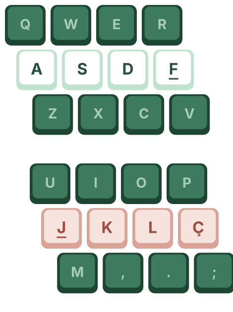
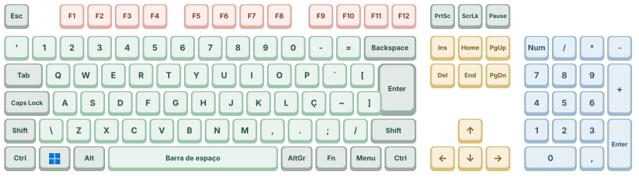
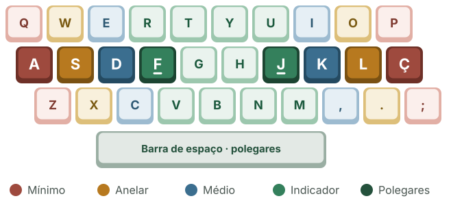

Conheça o teclado, posicione as mãos corretamente e treine sua digitação no Windows 11.
Teclado ABNT2Atalhos do Windows 11Typing.com

~1 min. Abrir a aula lembrando que digitar bem é uma habilidade prática: depende de conhecer as teclas, posicionar as mãos e treinar. Perguntar quem digita olhando para o teclado.
2
O que vamos estudar e praticar
Teclado QWERTY · padrão ABNT2
Definição: Padrão mundial de teclas, nomeado pelas 6 primeiras letras superiores.
Origem (1868): Criado para evitar o travamento das hastes nas antigas máquinas de escrever. Por que usamos até hoje?
Domínio de mercado: Popularizado pela Remington (1873) e consolidado por cursos de datilografia, virou um hábito global.
Inércia tecnológica: Mesmo com opções mais ergonômicas (como o modelo Dvorak), o custo de reaprendizado torna a troca impraticável.
No Brasil, os computadores com Windows 11 usam o teclado QWERTY no padrão ABNT2: é o que tem a tecla Ç.
Nesta aula você vai conhecer as teclas, aprender a posição correta das mãos e começar a praticar.
QWERTY
Teclas principaisEsc, Backspace, Delete, Tab, Enter, Ctrl e outras
Tipos de teclasOs grupos do teclado e para que servem
Posição das mãosFileira guia: A S D F · J K L Ç
Atalhos do Windows 11Combinações que economizam tempo
Prática no Typing.comCadastro na turma e primeiras lições
~1 min. Apresentar o roteiro. Destacar que o teclado brasileiro (ABNT2) tem o Ç e que isso muda a posição da mão direita em relação aos tutoriais em inglês.
3
Teclas principais
Esc
Escape (sair)
Cancela uma ação, fecha menus e caixas de diálogo.
Tab ⇥
Tab
Avança o cursor e passa de um campo para o outro em formulários.
⟵ Backspace
Backspace
Apaga o caractere à esquerda do cursor.
Enter ↵
Enter
Confirma uma ação ou começa uma nova linha no texto.
Del
Delete
Apaga o caractere à direita do cursor ou o item selecionado.
Ctrl
Control (controle)
Combinada com outras teclas, forma atalhos (ex.: Ctrl + C).
~3 min. Mostrar cada tecla no teclado real. Fazer a turma testar Backspace × Delete com o cursor no meio de uma palavra no Bloco de Notas.
4
Mais teclas importantes
Tecla Windows
Abre o menu Iniciar do Windows 11 e faz parte de vários atalhos.
⇧ Shift
Shift
Segure para digitar maiúsculas e o símbolo de cima das teclas.
Alt
Alt (alternativa)
Usada em atalhos, como Alt + Tab para alternar entre janelas.
Caps Lock
Caps Lock
Liga e desliga as letras maiúsculas (repare na luz indicadora).
Barra de espaço
Insere um espaço entre as palavras. Use os polegares.
↑←↓→
Setas
Movem o cursor pelo texto e pela tela.
~3 min. Pedir que todos apertem a tecla Windows e vejam o menu Iniciar abrir. Mostrar a diferença entre segurar o Shift e ativar o Caps Lock.
5
Tipos de teclas

Alfanuméricasletras, números, símbolos e espaço
Função F1–F12F1 ajuda · F2 renomeia · F5 atualiza
EspeciaisCtrl, Alt, Shift, Windows, Tab, Enter
Navegaçãosetas, Home, End, Page Up/Down
Numéricasteclado lateral para números
~3 min. Percorrer as cores do teclado. Lembrar que em notebooks o teclado numérico costuma não existir e as teclas F1–F12 podem exigir a tecla Fn.
6
Posicionamento correto das mãos

Cor forte = fileira guia, onde os dedos descansam.
Posição inicialEsquerda em A S D F; direita em J K L Ç.
Guias de relevoF e J têm um pequeno relevo: ache-os sem olhar.
PolegaresFicam apoiados sobre a barra de espaço.
Dedos curvadosDedos levemente curvados e pulsos relaxados.
Olhe para a telaEvite olhar para o teclado enquanto digita.
~4 min. Pedir que todos fechem os olhos e encontrem F e J pelo relevo. No ABNT2 o mínimo direito fica no Ç (não no ponto e vírgula, como nos tutoriais em inglês).
7
Atalhos úteis do Windows 11
Atalho
O que faz
Ctrl+C
Copiar
Ctrl+V
Colar
Ctrl+Z
Desfazer a última ação
Alt+Tab
Alternar entre janelas abertas
Atalho
O que faz
+E
Abrir o Explorador de Arquivos
+V
Histórico da área de transferência
+Shift+S
Capturar parte da tela
+.
Painel de emojis e símbolos
Dica
A tecla Windows é a do logotipo, entre Ctrl e Alt. Segure a primeira tecla e toque a segunda.
~4 min. Demonstrar ao vivo: copiar e colar um texto, Alt + Tab entre duas janelas, Win + Shift + S para capturar a tela e Win + . para inserir um emoji.
8
Benefícios da digitação correta
Produtividade
Trabalhe mais rápido e com menos esforço.
Saúde das mãos
Evite lesões por esforço repetitivo (LER).
Velocidade
Digite mais palavras por minuto (PPM).
Precisão
Cometa menos erros ao digitar.
Pratique regularmente! Em poucas semanas você vai notar grande melhora na velocidade e na precisão.
~2 min. Relacionar com o dia a dia do técnico: relatórios, planilhas e formulários. Comentar a LER e a importância da postura.
9
Vamos praticar!
15 minpor dia já fazem grande diferença
Precisão → velocidadeprimeiro acertar, depois acelerar
Comece devagarPriorize a precisão antes da velocidade. Digite cada letra com atenção.
Olhe para a telaMantenha o olhar no monitor, não no teclado.
Pratique diariamenteCrie o hábito: a constância é o que traz resultado.
Acompanhe seu progressoVeja sua velocidade (PPM) e sua precisão no Typing.com.
~2 min. Pouco tempo todos os dias faz mais diferença do que muito tempo de vez em quando.